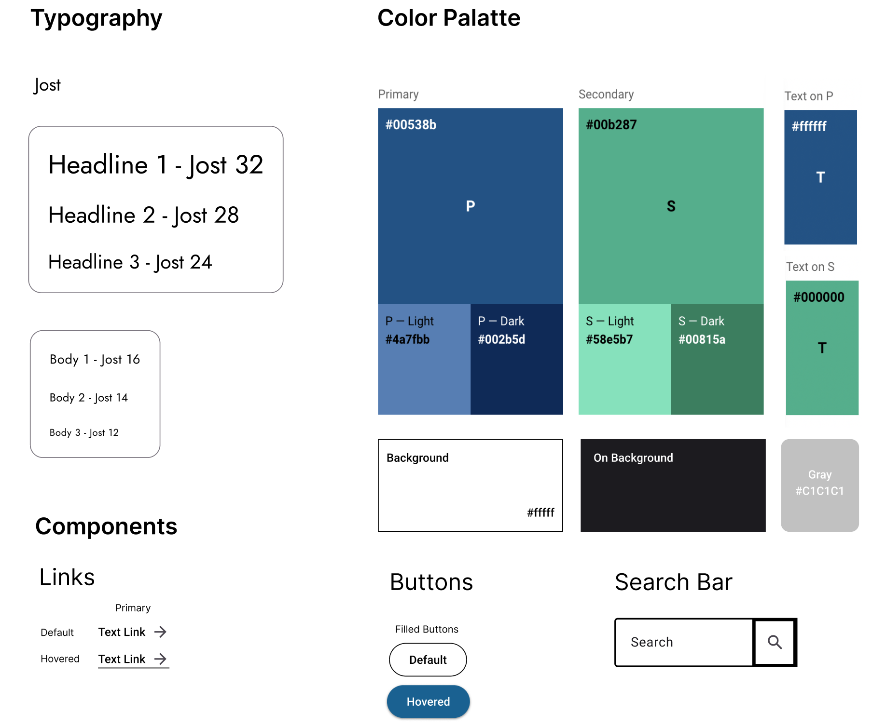
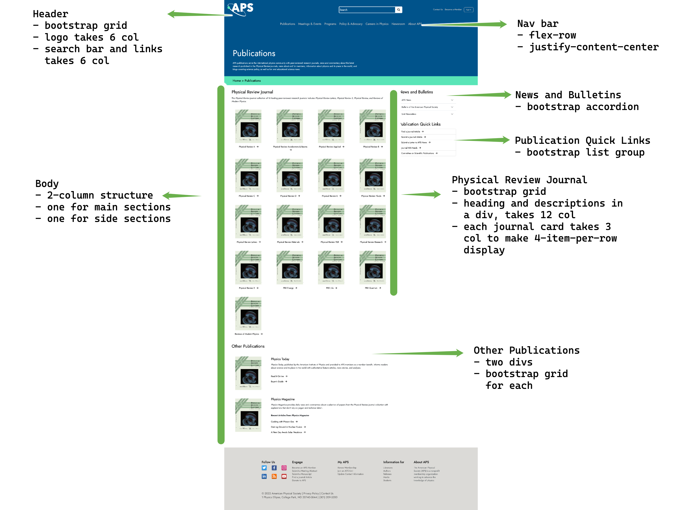

UX Researcher
October 2022
(2 weeks)
Individual
N/A
This is a project from CS1300 UIUX at Brown University. The goal of this project was to practice redesigning a website for better usability and responsiveness. The process involves analyzing problems in a public UI, creating low-fidelity and high-fidelity prototypes for different screen sizes, and using HTML/CSS to code up a website based on the prototypes.
For this project, I decided to redesign the publications page for the American Physical Society (APS). This page lists out the publications (journals, magazines, etc.) that APS hosts. As a former physics major, I frequently used this page as a reference when I had to dig through physics literature. I still remember feeling dazzled by the jarring use of random colors in the journals section when I first visited the site. There were also a few other perplexing elements that I never had the chance to closely analyze - well, here we are!
Note: APS actually went through a website upgrade while I was doing this project! While my project is based on their old page, which can be referenced here (hosted by WayBackMachine), I also tried to incorporate their new styles into my redesign. It is interesting to see how different our designs turn out to be!
Usability is a term that describes how easily or effectively a user can accomplish tasks on an interface. While this is a broad term that encompasses a number of goals, there are three main aspects to consider:
The main frustration I had about the website can be summarized in three main points:
After identifying usability problems, I used the WebAIM WAVE tool to detect accessibility issues of the original website. The main findings are summarized below:
Low-Fidelity Wireframes
To address the usability problems I found, I started by creating low-fidelity wireframes that allow me to get a general idea of the flow of the page, especially how to improve the layout of items. A few highlights of my redesign are:
Visual design style guide
I then created a visual design style guide to capture the colors, typography, and states of components I expect to use in the interface on Figma. This is helpful for separating my design thinking from the actually development process, as well as encouraging consistent visuals across the page.
High-Fidelity prototypes
Next, by combining the layout ideas I developed in my low-fidelity wireframes and the visual design style guide, I created high-fidelity prototypes in Figma. As I was developing the prototypes, I also strategized on how to achieve the layout and visuals in HTML/CSS, as well as how to make the website responsive.
Here are my high-fidelity prototypes with annotations on elements used, state changes, as well as key layout choices for handling responsiveness:
Note: The footer is just an image I screenshot from the original website after they upgraded their UI, because it fits in quite nicely with my design!
Finally, I created the responsive website according to my high-fidelity prototypes. Since we were limited to only HTML and CSS libraries in this project, some interative elements are not implemented, such as the expanded hamburger menu. Throughout this project, I have learned how to always keep responsiveness in mind when designing websites, as well as applying usability principles I learned in class to real-world designs. Here are a few things that I am hoping to expand on or finish implementing later: